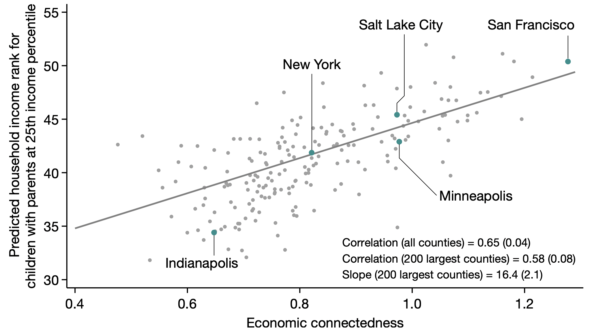
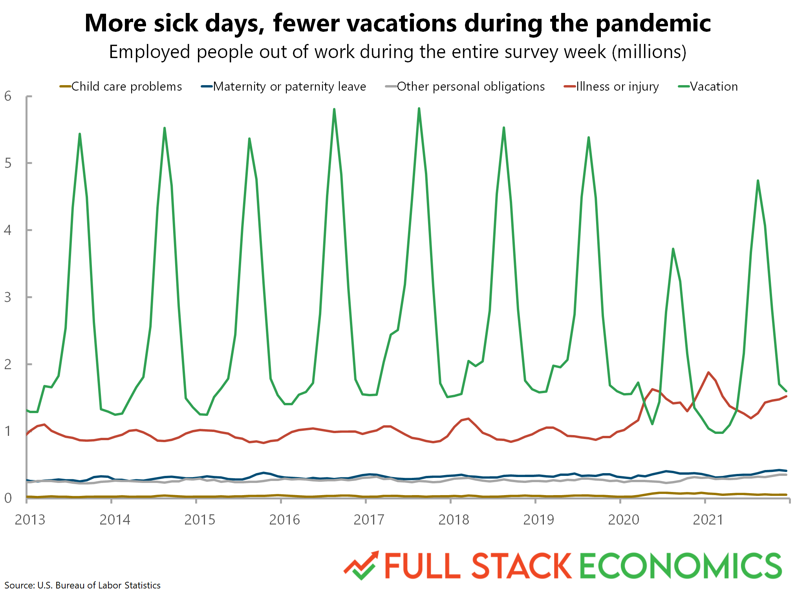

Welcome to CSS 2#
Goals of this lecture#
Quick introductions/logistics.
Introduction to CSS: What is it and why does it matter?
If you took CSS 1 last quarter, some of this will be familiar.
Overview of course content.
Course Logistics: CSS 2#
Teaching Team:
Sean Trott: Assistant Teaching Professor in Cognitive Science and CSS.
TAs: Joshua Burrows
Contains web versions of each lecture.
Also contains syllabus and schedule.
What is CSS?#
In a nutshell, Computational Social Science focuses on computational approaches to social science.
At UCSD, Social Sciences encompasses many disciplines:
Psychology.
Economics.
Political Science.
Cognitive Science.
Urban Studies and Planning.
And many more!
What is computation?#
Computation is calculation using well-defined steps, e.g., an algorithm.
A computer is anything that implements these well-defined steps.
Historically, the term “computer” used to refer to people!
A programming language is a way to get a computer to do these things for you.
Can automate processes: speed things up!
Can perform computations at scale.
Can share with others.
CSS in action: inspirations#
CSS often involves analysis of large-scale datasets using statistical tools.
Can yield important theoretical and practical insights.
Economic mobility#
N = 22B (Facebook connections)

The pandemic’s effect on missed work in the USA#
Reference: Full Stack Economics

Auditing racial discrimination in hiring#
N = 13,000 (applications)
Moral decision-making across the world#
N = 70,000 (from 42 countries!)
Are song lyrics getting more negative over time?#
N = ~150K songs
How similar are vocabularies across languages?#
N = 41 languages (1010 concepts)
Course Structure#
Class time is divided into lecture and section.
Lecture is a time to introduce, explain, and demonstrate new concepts.
There will be a focus on hands-on practice (i.e., “check-ins”).
Section is a time to practice and develop further fluency with these concepts.
Following along in lecture#
Lecture will have many opportunities to follow along via check-ins.
I do recommend doing this, whether you’re in-person or watching the podcast!
The lectures can all be found on GitHub, and downloaded or cloned into your DataHub account:
Link: UCSD-CSS2/lectures
We’ll review exactly how to do that in class.
Grading and Assessments#
Most weeks will have a coding lab due the following week.
There are also four problem sets, which will be auto-graded.
There is also a final project––like a big, more coherent problem set.
Grade Component |
Percentage of Final Grade |
|---|---|
8 Coding Labs |
50% (6.25% each) |
4 Problem Sets |
32% (8% each) |
1 Final Project |
18% |
Expectations#
Course will involve programming in Python.
We will review basics, but expectations include CSS 1 content.
Lab 1 will be basic Python review!
Will also involve using DataHub (and Jupyter notebooks).
Lecture/section attendance not required.
No midterms or final exam.
Academic Integrity#
From the syllabus:
Please turn in your own work. While you are encouraged to work together on some assignments (e.g., on labs), you should still understand the code you’ve submitted. Problem sets and final project should be completed independently.
Please review academic integrity policies here. Cheating and plagiarism are unfair to other students and ultimately to yourself, and you will be penalized if caught. Instead, if you’re struggling with something, please come to office hours and ask for help!
Course Content#
Key questions#
We’ll examine some key questions involved in CSS:
How is a dataset formatted, and is this the appropriate format for what I want to do?
Is this dataset representative or does it reflect a biased sample?
What ethical considerations should I take into account when obtaining and analyzing data?
What kind of model is the most appropriate for these data?
How do I design and implement these models––ranging in complexity from linear regression to support vector machines?
Sample topics#
Ethical issues in CSS.
Data visualization.
Data wrangling.
Linear regression.
Classification.
Model evaluation.